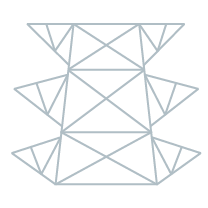
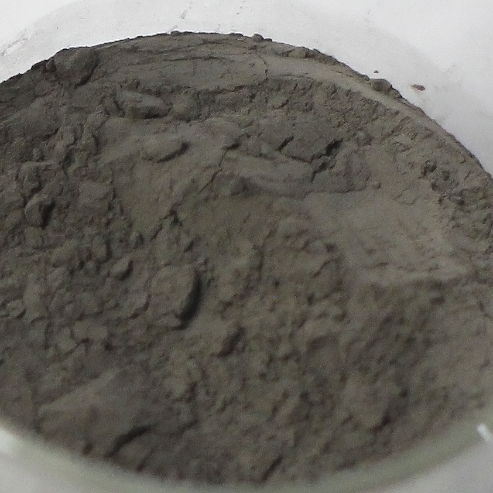

Astrocyte

獨一無二的日常風景
腳下經過的人孔蓋彷彿是進入異次元世界的秘密通道，燃煤電力穿過長達14萬公里地底電纜維持島民每日生活運轉; 封存帶有獨特生物時空印記的剩餘煤灰，即使是普通的日常，同時也是僅存當下、無可取代的風景。
煤灰是燃煤火力發電後所產生的廢棄產物，經過電廠鍋爐一千度以上燃燒後，主要由無毒單純氧化矽與氧化鋁等無機質元素組成的飛灰。透過集塵環保設備回收再利用，可作為建築及水泥原料。與異材質結合展現耐水高強度特性，實踐循環經濟環保理念。
台電文創 X Fabcraft
Fabcraft Design Lab設計師 闞凱宇長期投入以數位科技進行設計與工藝創作，共享共創精神確立循環創意開發目標，並帶著高度實驗信心，為資源與廢棄物帶來新的定義!

燃煤因時空地域環境不同，各自具有無一重複的礦物質比例，經過高溫燃燒後使煤灰展現獨特色澤。跨界結合共創精神確立循環創意開發台灣陶瓷工藝與材料吸水特性，多次實驗後使煤灰含量高達50%，成功提升再利用率，打造出兼具樸實手感並展現煤灰特殊成色的人孔蓋杯墊。